Dwarfs

The Dwarfs, also called the "Elder Race," (or the Dawi as they call themselves) are one of the oldest and proudest intelligent races of the Warhammer World, with a great wealth of history and power that stretches back to time immemorial. They once held an empire which stretched from Norsca in the north to the jungles in the south, and from Mount Silverspear in the east to the Grey Mountains in the west. But the heart of the Dwarfen realm, the Karaz Ankor as they call it, will always lie within the domains of the Worlds Edge Mountains. The highest mountain range in the world, it is filled with the magnificent halls and holds of the Dwarfen people - a testament to the great feats of engineering and power once wielded by this ancient civilization
Select a unit type below for more information about their in-game stats and background!
Unit Stats:
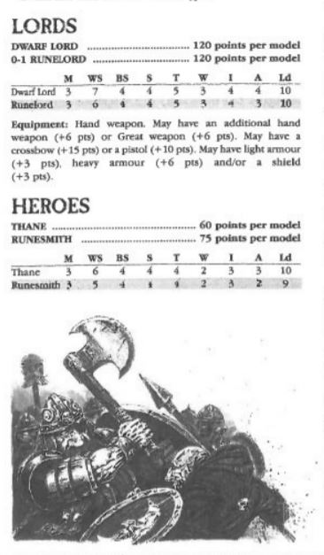Famous Dwarf Lords:
Alaric The Mad
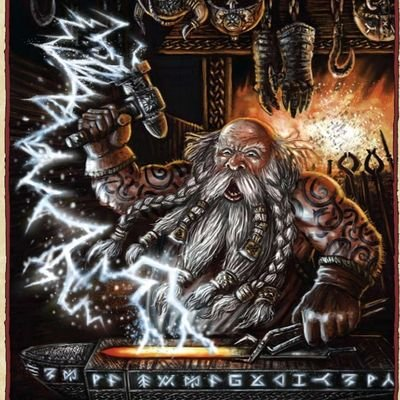Alaric the Mad was an ancient Dwarf Runesmith. He is famous for his many creations, and most of them are indeed among the most powerful artefacts in the world, including the 12 Runefangs of the Empire. He was known as "The Mad" by his fellow Dwarfs because he embarked himself in a quest to devise a new Master Rune, the Master Rune of Ages, resulting in the creation of the Nemesis Crown. He's described as a flawed genius, obsessive and secretive even beyond the norm for Runesmiths.
Thorgrim Grudgebearer

Thorgrim Grudgebearer is the current High King of the Dwarfs and the ruler of Karaz-a-Karak. He is a throwback to the High Kings of old — eager for new conquests, mighty in battle, and a merciless enemy. Yet upon his worn brow, there also sits a pearl of great wisdom, and he is able to uphold the ancient traditions as well as to accept, if not embrace these needed changes, such as alliances and new technology. Thorgrim is forever brooding upon how to return his people to their former glory. As the ultimate ruler of the Dwarfs, the Dammaz Kron or the Great Book of Grudges is entrusted into his honourable keeping. It is Thorgrim's avowed wish to avenge every single entry contained in that voluminous tome — an impossible task if he should live a thousand lifetimes. Yet such was his resolve that he has already helped to rejuvenate the whole of the Karaz Ankor. Tales of his deeds and the long list of grudges already struck out, fill his grim warriors with a feeling that the Dwarfs have long done without: hope. Borne upon the Throne of Power and brandishing the Axe of Grimnir, Thorgrim is at the forefront of what the Dwarfs hope will be a great conquering.
Unit Stats:
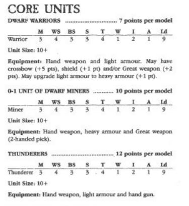Examples:
Dwarf Warriors
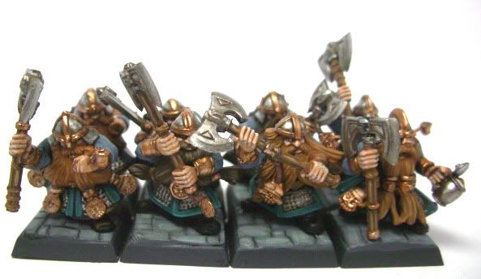The Skeleton Warriors of Nehekhara are ancient and eternally loyal troops whom have willingly followed their mighty rulers unto death, forming the very core of all of the Tomb Kings' untold armies. Rising up from the dusty dunes, rank upon rank of these Skeleton Warriors stand ready to kill once more in the name of their immortal monarchs. Holding curved swords and long spears, ancient forms awake from their deathly slumbers, forming up in vast regiments with a supernatural discipline that few living warriors can hope to match. The mighty armies of Nehekhara, made up of regiment after regiment of valiant soldiers, swore oaths of eternal loyalty before the gods to serve their monarch in life and beyond into death.
Skeleton Cavalry
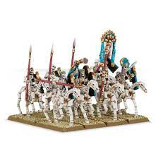The Skeleton Horsemen of the Tomb Kings are the swift and lightning-fast cavalry that has run down the enemies of Nehekhara for millennia. Regiments of Skeleton Horsemen race across the sandy plains of Nehekhara mounted on the fleshless remains of their once-proud steeds, weapons lowered as they gallop towards their foes. These skeletal riders drive their heavy spears into their foes with bone-jarring force, using well-aimed thrusts that punch clean through torsos and rip open throats in a spray of blood. Those not impaled by the cavalry rider's razor-sharp spearheads are trampled into the ground by the thundering hooves of skeletal steeds.
Unit Stats:
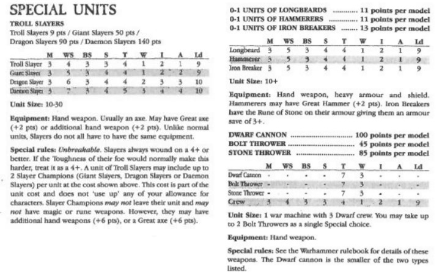Examples:
Tomb Guard
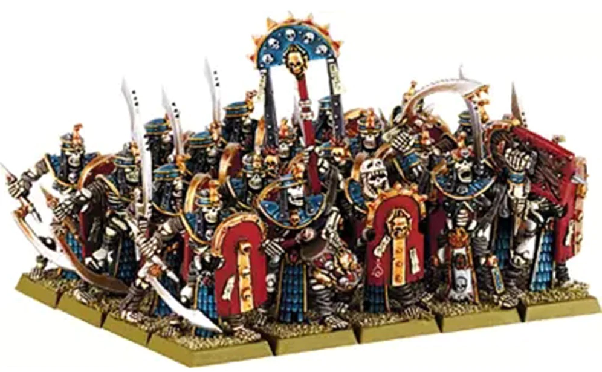TThe Tomb Guard are the partially mummified remains of the King's elite guard. They are exceptional warriors, maintaining all the discipline and martial skill they had in life. In battle, the Tomb Guard form unwavering ranks of armoured warriors. They have spilled the blood of their enemies for countless centuries, and numerous armies have been dashed against their unyielding, implacable shield walls.
Skeleton Charioteer
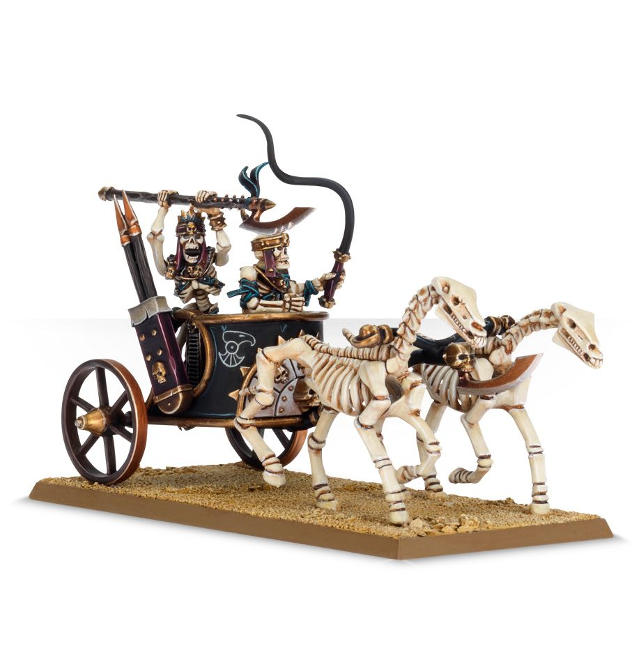The Skeleton Chariots of the Tomb Kings Charioteer Legions are considered the pride of Nehekhara's army. Their advance is heralded by a cloud of dust thrown high into the air as they drive across the sands. Moments later, units of these deadly machines crest the dunes, their wheels whirring as they careen towards their foe. The legions impact with bone-shattering force, wave after wave of chariots crushing bodies beneath heavy wheels as their Undead crew lay about the disorientated foe with lethal effect.
Unit Stats:
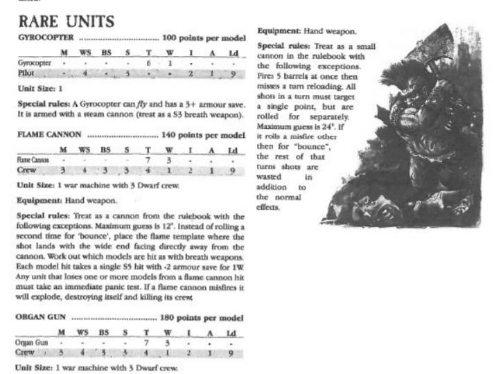Examples:
Undead Scorpion Swarm
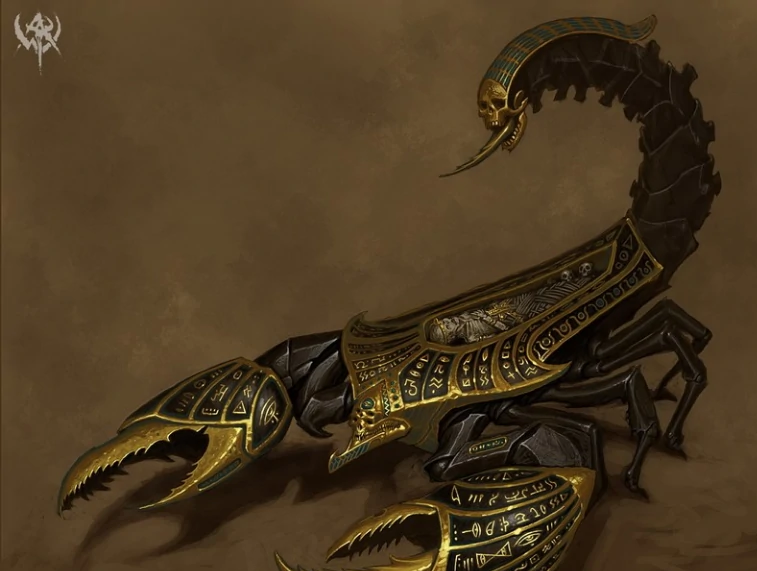Tomb Scorpions are powerful creations of the Mortuary Cult, formed from a combination of stone, metal, lacquered wood and fused bone. Burrowing beneath the surface of the desert, they attack suddenly and without warning, exploding into the fray in a shower of sand. They are lethal foes, for a Tomb Scorpion's tail carries a potent sting that can incapacitate the largest foes, and they have powerful pincers that can slice a man in half. As they scuttle forward on eight segmented legs, they hack apart anything in their path.
Screaming Skull Catapult
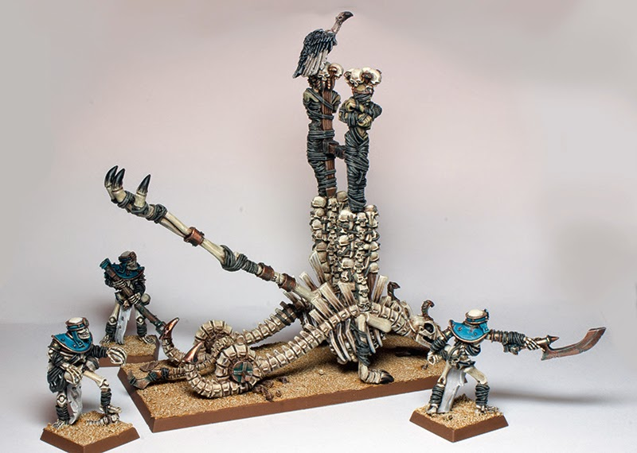The catapults of a Tomb King's eternal army are akin to the stone throwers of other races, but instead of flinging rocks at the foe, they throw volleys of flaming skulls. The Liche Priests cast terrible curses upon every one of these skulls, enchanting them so that they scream hideously as they are hurled through the air, rising to a deafening crescendo just before they strike their target. Those are the very death screams of the skulls' former owners, the wailing shrieks of those slaughtered on the field of battle and the agonised cries of prisoners captured at the moment of their execution. Many battle-hardened warriors are driven to the edge of insanity by the blood-curdling sound. This horrific ammunition bursts into hellish, ethereal flames when it is launched, and as the skulls arc through the air, they blaze an eerie trail of green-fire behind them. Most of these skulls explode on impact, sending fragments of splintered bone in all directions and engulfing those nearby in a wash of balefire. Others smash into their target with horrifying force, infernal flames spilling out of empty eye sockets as the skulls chew through armour and warm flesh alike.
Game Book
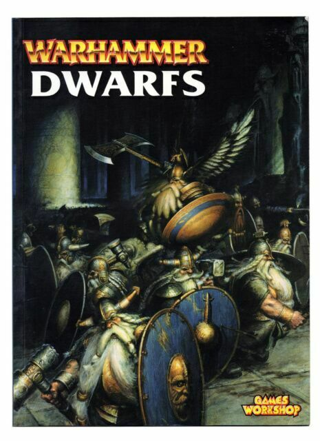Each army requires a gamebook to play the stats listed above are just an example of what you will find in each army book! they contatin info and stats to help you field your army as well as fun history and infromation about your selected faction.